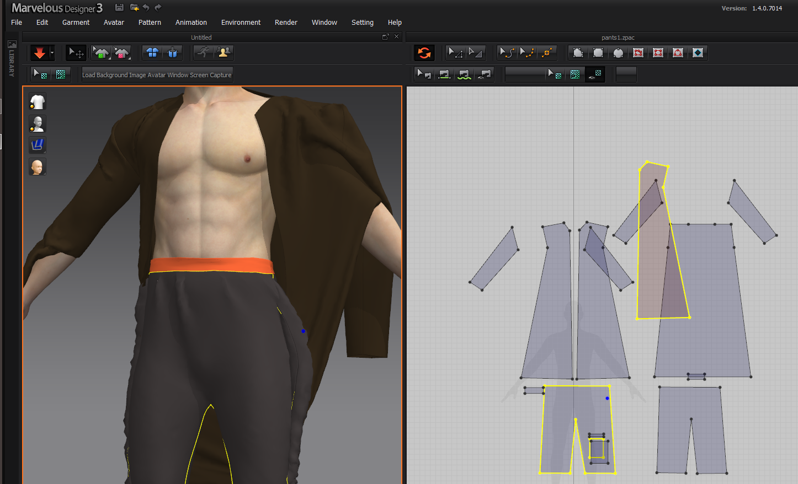

Sculpting helps many people unwind and relax. ZBrush is the perfect tool to start with.
Founded in 1997, ZBrush by Maxon develops and markets innovative software tools for the film and video,
games, graphic design and illustration markets.
3DS Max
3Ds Max is a program for creating 3D objects, rendering and animating in 3D. It is a
product of Autodesk, which specializes in working with three-dimensional images for engineering and design.
It is compatible with many modules for modeling light, materials used, and various effects. Animations are
amenable to both whole objects and their elements. There are particle motion effects (fire, smoke, splashes,
snow) and liquid effects.

Marvelous Designer
It is a program for creating three-dimensional elements of clothing and other products
made of fabric and leather: curtains, bedspreads, sofa upholstery, etc. The program is widely used in the
gaming industry, in film production, as well as in the field of interior design. With proper use, the tool
will allow to develop the most realistic costume model that will look spectacular both in close-ups in a
movie or game and on an advertising banner.
Corona
Visualizers use the program in architecture and design to create photorealistic
interiors. The software allows you to adjust not only the directions and types of light but also the
materials of the surfaces of objects in the room. A combination of 3Ds Max + Corona is often used to achieve
maximum photorealism.
AutoCad
Creating drawings and layouts at a professional level is available to everyone today. To
do this, you do not need to learn to draw skills or study norms and standards. They collect everything you
need in the AutoCAD program. AutoCAD is used for 2D drawings, documents, 3D models, and
visualizations.
Unreal Engine
Today, the Unreal Engine is actively used to develop simple casual games for smartphones
and tablets, as well as to create full-fledged high-budget games designed for a mass audience (they are
called AAA projects). You do not need to write code yourself — the Blueprints Visual Scripting system
simplifies the task.